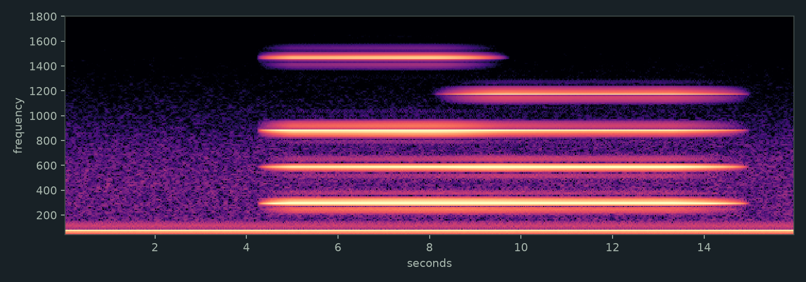

ORLA / A PAIRING
One Current, Two Marks
These two drawings share dark water and a warm mark. The boat's amber point stays aboard its small, still vessel; the cloth in the chance passage leaves one hand and is caught by another. One holds a solitary presence. The other passes between people. They do not tell the same story.
One point stays aboard.
One cloth leaves a hand.
The water gives it back
to another.
The poem is an invented response to these images. The first drawing is fictional; the second answers G. C. Kniffin's account in The Third Day at Stone's River.
The Handoff
A single sustained tone crosses from left to right and changes timbre as it reaches the other side. A low bed stays underneath. This is a synthetic sound study, not a reconstruction or a recording of the river.

Return to The Weather Witness